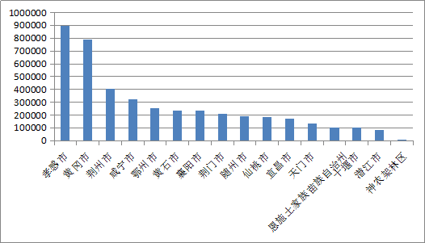
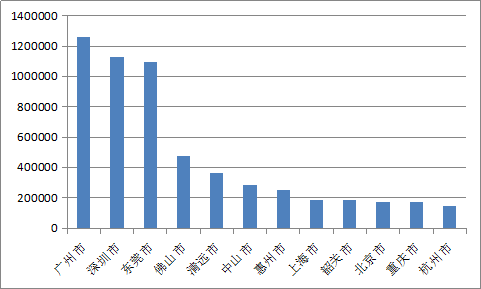
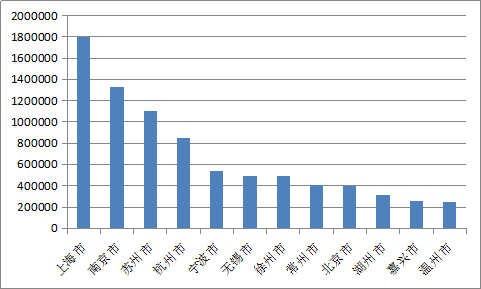

疫情总动员，各地怎么做|保交通、重问责、迟开学
原文链接 备份链接 【财新网】（记者 张兰太）新冠肺炎疫情仍在发展，但年后企业复工、人员返程逐步进入高潮。与此同时，作为全国的首都和人口流入重点地区，北京进一步升级疫情防控措施。2月14日，北京发布通告要求，从即日起，所有返京人员到京后， …

以外来人员就业为主的地区应延迟复工，以本地人员就业为主的地区应视优先复工；适当延迟劳动密集型行业复工，优先放宽非劳动密集型行业复工；重点保障疫情防控必需、城市运行必需、群众生活必需的行业复工
***********石光 | 文***********

人口流动是新型冠状病毒肺炎疫情传播的主要渠道。本次疫情爆发恰逢春节，大规模、长距离的人口流动对疫情控制带来巨大挑战。本文利用百度公司2019和2020年的人口流动大数据，分析春节前后我国的人口流向和规模，识别疫情传播渠道和防控重点。其中，对2019年，我们计算了春节前后全国389个地级以上城市两两之间每日人口流动的完整数据；对2020年，计算了截至2月15日主要大城市的每日人口流动数量。
当前疫情仍处快速演变之中，且节后人口大规模流动尚未结束，可能成为新一轮疫情扩散的燃点。利用大数据支撑疫情分析，既要实时监测当前每日人口流动态势，也要根据往年经验预测未来趋势。
数据表明，腊月29日（公历1月23日）武汉宣布“封城”是今年人口流动的转折点（注释[1]），在此之前，2020年和2019年相同农历日期的人口流动态势高度相似；此后，因疫情公开化，人口迁徙暂时性大幅减少。
虽然疫情爆发打破了原有流动规律，但主要是迁徙时间的分散或延迟，而迁徙方向和潜在规模可能相对稳定，大部分节前返乡人口节后最终仍会回城，成为疫情输入型扩散的重要渠道。
本文首先分析春节前武汉人口流出的去向和规模，这是本次疫情传播的主要原因；然后在全国视角下，分析春节后重点疫区人口流动的主要渠道和时间特征，及其对疫情“二次传播”范围扩大的影响；最后提出政策建议。
一、流出武汉的600万人成为疫情传播主要渠道
武汉“封城”有效控制了人口外流。进入腊月后，我国每日流动人口约1600万人。封城前，1月1日至23日（即腊月7日至29日）恰逢人口返乡高峰期，武汉平均每日流出25万人（注释[2]），是全国第10大人口流出城市。封城后，1月24日和25日武汉流出人口分别降至14万和8万，26日后接近于零，这对减少疫情扩散起到了重要作用。
但由于武汉封城已是春节前一天，绝大部分返乡人口已经流出。按每日25万流出人口测算，1月份武汉累计流出人口约600万，成为疫情扩散的主要来源。从大数据看，这600万人去向有以下特征。
第一， 七成为湖北省内流动，三成为跨省流动。
武汉流向湖北省内其他地市的人口共计430万，占流出总数的七成。其中，孝感和黄冈是接收武汉回流人口最多的城市，分别约90万和80万，也是疫情重灾区。荆州、咸宁、鄂州、黄石、襄阳、荆门接收的武汉回流人口在20至40万，随州、仙桃、宜昌、天门在10万以上。

第二， 三成跨省流动中，去向以周边省市为主。
武汉跨省流动人口共计180万，占流出总数的三成。其中，接收武汉回流人口最多的是河南（33万），其次是湖南（21万）；超过10万人的还有安徽（14万）、广东（13万）、江西（13万）、江苏（10万）；超过6万人的还有重庆（7万）、浙江（7万）、四川（7万）、山东（6万）、北京（6万）。上述省市排序与当前疫情严重程度基本一致。

第三， 流向大都市圈的人数多，对疫情扩散影响大。
大城市人口密集，是人流枢纽，流向大城市的武汉人口会通过交叉传染使疫情扩散到全国各地，综合影响更大。三大都市圈核心城市都接收了较多武汉人口，其中，北京（6.3万）是最多的，其次是上海（5.3万）、广州（3.8万）和深圳（3.6万）；其他包括南京（2.1万）、杭州（2万）、苏州（1.4万）、温州（1.3万）、天津（1万）、东莞（0.9万）、佛山（0.7万）。总体看，主要都市圈中，流向长三角的武汉人口总计超过12万，流向珠三角的超过9万。此外，流向成渝都市圈的武汉人超过10万，其中重庆（7.3万）、成都（2.8万）。

二、高度警惕人口回流造成疫情“二次传播”
武汉流向各地的人口，在春节期间与本地其他人密切接触，这种“一次传播”是疫情的主要原因。春节假期期间，受益于人口流动少、假期延长等因素，疫情扩散暂时局限在各地较小范围内。特别是2月3日以来，除湖北以外全国每日新增确诊病例数持续下降，显示出疫情得到初步控制的积极信号。但是，随着2月10日全国陆续开始复工，春节后人口开始大规模回流，疫情传播范围将会扩大，这种“二次传播”可能加大疫情控制难度，需要高度警惕。
当前须重点关注接收武汉人口较多的两类区域，一是湖北省，二是河南、湖南、安徽、江西等周边省市（下文简称“周边四省”）。
由于湖北全省已采取有力隔离措施，人口流出少，“二次传播”基本被阻断。周边四省既是武汉回流人口大省，也是北上广深回流人口大省，是“二次传播”的主渠道。从全国人口流动总体情况看，我国劳务输出主要有四大通道，分别是河南-三大都市圈、安徽-长三角、湖南湖北江西-珠三角、河北-京津。除河北外，其他劳务输出大省都在湖北周边。春节后这些省的外出人口，可能成为疫情向大城市蔓延的重要途径。
正月是人口返城回流集中期，从往年看，这一过程将持续到元宵节后十天左右，预计今年将会进一步延迟。
从流出角度看，2019年正月1日至24日之间，河南、湖南、安徽、江西的跨省流出人口总量分别达1400万、1100万、1300万、900万人（注释[3]），大部分流向大都市圈。
具体来看，河南流向京津冀、长三角、珠三角城市的人数都较多，包括北京（104万）、上海（72万）、苏州（71万）、杭州（41万）、深圳（36万）、东莞（31万）、广州（31万）、宁波（27万）。
湖南外出人口主要流向珠三角，包括广州（126万）、深圳（113万）、东莞（109万）、佛山（47万）、清远（37万）、中山（28万）、惠州（25万）。
安徽外出人口主要流向长三角，包括上海（180万）、南京（133万）、苏州（110万）、杭州（85万）、宁波（54万）、无锡（50万）、徐州（49万）。
江西主要外出人口主要流向珠三角和长三角，包括深圳（67万）、广州（53万）、杭州（48万）、东莞（45万）、上海（44万）、温州（35万）、泉州（30万）。
此外，2019年湖北跨省流出人口总量为900万人，预计今年仍将保持这一规模，但由于目前湖北交通封闭而暂时处于隔离状态。




大城市在春节后面临人口返城高峰期，疫情防控压力将会明显加大。
从流入角度看，2019年正月1日至24日之间，北京、上海、广州、深圳的流入人口总量分别达1300万、1100万、530万、570万人，其中来自河南、湖南、安徽、江西四省合计分别占13%、29%、41%、40%，如果再加上湖北则分别占15%、32%、52%、51%。
广州、深圳等珠三角城市约一半外来人口来自湖北及周边四省，随着企业陆续复工，疫情加剧的可能性很大。
往年经验显示，自然状态下的节后人口流动在时间上高度集中，主要集中在假期结束的前后三天。今年由于春节假期推迟一周，人口流动高峰期也将随之延迟。在人口集中流动时期，高铁、飞机等交通工具成为各路人群汇集场所，大大增加了病毒传染的概率。
三、分区分业分步复工
当前疫情防控形势严峻，节后人口大规模返城、企业复工、气温转暖等因素，可能进一步加剧疫情。疫情重点区域将会扩大，从湖北及其周围省市，转向三大都市圈和沿海发达省市。判断疫情演变形势，明确防控重点，对于增强战胜疫情信心、提升防控效果至关重要。为此，提出以下政策建议。
一是进一步阻断疫情“二次传播”渠道。
当前，湖北省人口流出已得到严格控制，但周边四省人口流出仍然较多，是疫情输出的重要隐患。应以河南、湖南、安徽、江西等劳务输出大省为防控重点，考虑进一步延后或分散上述省市人口集中外流。上述四省中，人口输出较多的城市是防控关键，主要包括郑州（390万）、周口（350万）、长沙（340万）、合肥（310万）、阜阳（290万）、商丘（270万）、上饶（240万）、驻马店（240万）、衡阳（240万）、南阳（240万）、宿州（230万）、邵阳（220万）、信阳（220万）、亳州（210万）、赣州（210万）。（注释[4]）要压实地方政府责任，在人口流出地环节加强疫情筛查。
二是加强防人口流入城市的防控力度。
对北上广深等特大城市，春节后返城的“二次传播”人数，是春节前来自武汉“一次传播”人数的30-60倍（注释[5]），疫情防控压力更大。
除湖北以外其他省市2月10日已开始复工，人口大量集中返城，输入型扩散难以避免，这对原有的防控体系和防控能力形成巨大挑战。大城市既要防输入，更要防扩散。
对策是加强源头管理，强化对来自湖北及周边四省人员的检疫，利用大数据工具精准掌握人员流向。加强早期识别，严格筛查疑似病例，分级分类进行隔离。
同时，增加应急医疗服务供给，加快建设集中隔离点，集中收治疑似病例，减少居家隔离带来的家庭和社区传染。划小隔离单元，切断传染源与外界联系。完善信息披露，减少社会恐慌心理。
三是分地区分行业分步骤推动企业灵活复工，掌握疫情防控和保增长、保障物资供应之间的平衡。
原则上，以外来人员就业为主的地区，应适当延迟复工，以本地人员就业为主的地区，应视条件优先复工。适当延迟劳动密集型行业复工，优先放宽非劳动密集型行业复工。重点保障疫情防控必需、城市运行必需、群众生活必需的行业。建立企业复工报备制度，对企业疫情防控措施开展必要的评估。鼓励复工企业根据不同岗位特征，采取远程办公或弹性上班制，分散上下班时间，平抑城市内通勤高峰。
注释：
[1]以农历腊月29日（公历1月23日）武汉“封城”为界，2020年春节人口流动可分为两个阶段。在此之前，全国每日人口流动的时空态势与2019年高度一致；在此之后与2019年存在明显不同，主要原因是疫情加重、信息广泛传播、假期延长、居民主动减少外出等因素，导致人口流动特征发生较大变化，劳动力返城明显延迟。
[2]根据百度数据，进入腊月后，我国每日流动人口约1600万人，武汉占全国流动人口比重为1.5%。
[3]上述数字不含省内流动人口。
[4]括号内数字为该市2019年正月1日至24日的人口流出总规模。
[5]根据前文测算，春节前武汉流入北上广深的人数分别约6.3万、5.3万、3.8万、3.6万。春节后湖北周边四省流入北上广深的人数分别约170万、320万、220万、230万。
作者为国务院发展研究中心副研究员，编辑：马克


责编 | 蒋丽 lijiang@caijing.com.cn

原文链接 备份链接 【财新网】（记者 张兰太）新冠肺炎疫情仍在发展，但年后企业复工、人员返程逐步进入高潮。与此同时，作为全国的首都和人口流入重点地区，北京进一步升级疫情防控措施。2月14日，北京发布通告要求，从即日起，所有返京人员到京后， …
原文链接 备份链接 【财新网】（记者 黄蕙昭 综合）“应收尽收、不漏一人”的强硬指令下，防控压力层层下压，社区作为抗疫“第二战场”承重更甚。艰苦卓绝的武汉保卫战中，基层社区暴露出诸多问题，折射防控指令之阻滞，上下衔接之龃龉，应急资源之困 …
原文链接 备份链接 经济观察报 记者 叶心冉 上海报道 2月12日，苏州工业园区经济发展委员会公布数据称，辖区目前“三必需一重要”（涉及保障公共事业运行必需、疫情防控必需、群众生活必需及其他涉及重要国计民生的相关领域）企业100%开工，规 …
原文链接 备份链接 . 生命的黑色 疼痛科小蔡 02-06 23:49 投诉 阅读数：209万+ . 生命的黑色 本来我发了个圈，我又撤了，我是心里很痛，但是现在说话做事一群人看着，默默的送兄弟，也很难。 我撤掉第二个原因，是因为我希 …
原文链接 备份链接 在武汉经商、务工、求学的温州人大约有18万。春节前后，至少5万温州人从武汉等地返回温州。他们中很多人一到家乡就进行了14天的隔离观察。 有的是居家隔离，当地政府工作人员每天定时“查岗”，确认隔离者是否在家。 这些 …